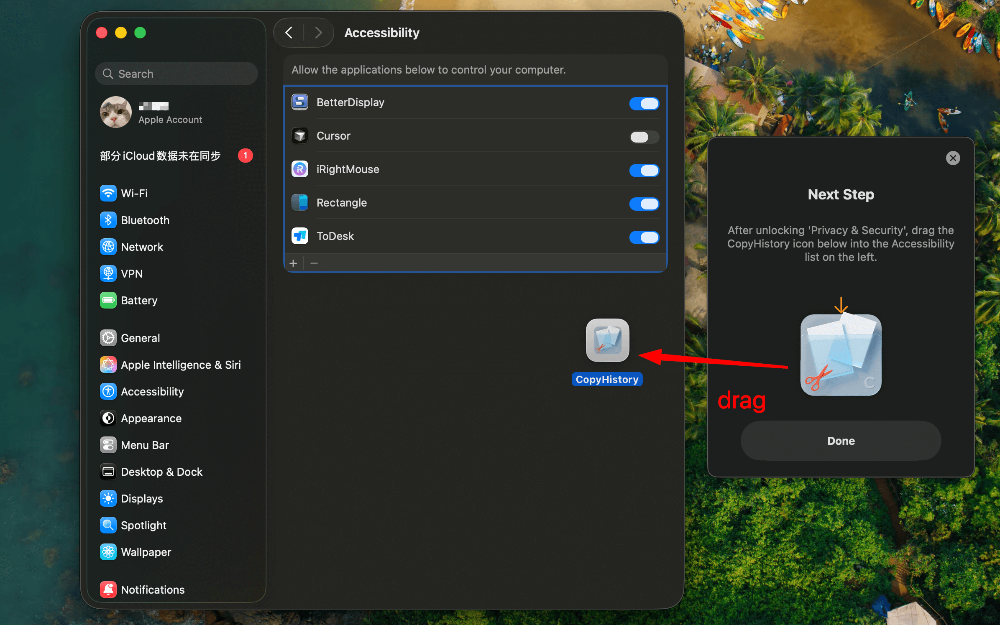
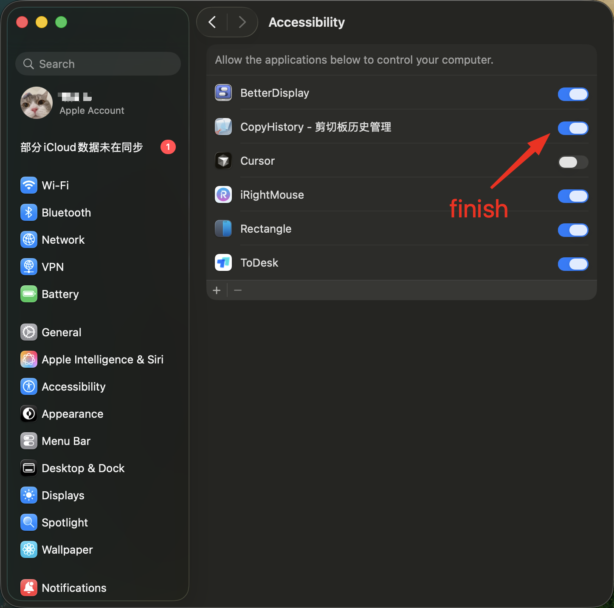

1
Open System Settings打开系统设置
Open System Settings, then go to Privacy & Security and choose Accessibility.
打开系统设置，进入隐私与安全性，然后选择辅助功能。
macOS permission setup
macOS 权限设置
CopyHistory needs Accessibility permission only when it pastes directly into other apps. macOS requires this approval for any app that simulates keyboard input.
CopyHistory 只有在需要直接粘贴到其他应用时才使用辅助功能权限。macOS 要求所有模拟键盘输入的应用都必须由用户手动授权。
Command + V. You can still copy an item from history and paste manually.
为什么需要：没有辅助功能权限时，CopyHistory 无法模拟 Command + V。你仍然可以从历史记录中复制项目，然后手动粘贴。
Open System Settings, then go to Privacy & Security and choose Accessibility.
打开系统设置，进入隐私与安全性，然后选择辅助功能。
Drag the CopyHistory icon into the Accessibility app list, or click the add button, choose CopyHistory from Applications, and confirm.
你可以将 CopyHistory 图标拖入辅助功能应用列表，也可以点击添加按钮，在“应用程序”中选择 CopyHistory 并确认。

Make sure the switch next to CopyHistory is turned on. The app will detect the permission automatically.
确认 CopyHistory 旁边的开关已开启。应用会自动检测权限状态。
